")
Dungeoneering - Summoning Tables
Introduction | Bloodragers | Deathslingers | Stormbringers
Hoardstalkers | Worldbearers | Skinweavers
Hoardstalkers | Worldbearers | Skinweavers
Summoning in Daemonheim is only accessible to RuneScape Members. Please subscribe to get this feature.
You must have completed Wolf Whistle to summon familiars within Daemonheim.
Introduction
To summon familiars in Daemonheim, you must be raiding a dungeon on the following complexity level:
Complexity level 5+ - Summoning
Click here to read more about Summoning in RuneScape.
To summon a familiar, you must have charms and a suitable secondary ingredient. Charms must be won in combat while secondary ingredients can be won in combat or bought from the smuggler. With all of the necessary ingredients for a pouch, travel to an obelisk to infuse one. Obelisks are always found in the starting room of a dungeon.
The familiars are as follows:
- Bloodragers - Melee
- Deathslingers - Ranged
- Stormbringers - Magic
- Hoardstalkers - Skill/Forager
- Worldbearers - Beast of burden
- Skinweavers - Healer
Summoning Bloodragers
Infusing bloodrager pouches:
| Pouch | Summoning Level Required | Components | Summoning Experience Gained | |||
 Cub bloodrager |
1 |
 Gold charm |
 Novite ore |
5.0 | ||
 Little bloodrager |
11 |
Gold charm |
 Bathus ore |
19.5 | ||
| 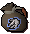 Naïve bloodrager |
21 |
Gold charm |
 Marmaros ore |
43 | ||
 Keen bloodrager |
31 |
 Green charm |
 Kratonite ore |
68.5 | ||
 Brave bloodrager |
41 |
Green charm |
 Fractite ore |
99.5 | ||
 Brah bloodrager |
51 |
Green charm |
 Zephyrium ore |
157 | ||
 Naabe bloodrager |
61 |
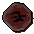 Crimson charm |
 Argonite ore |
220 | ||
 Wise bloodrager |
71 |
Crimson charm |
 Katagon ore |
325 | ||
 Adept bloodrager |
81 |
 Blue charm |
 Gorgonite ore |
517.5 | ||
| 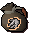 Sachem bloodrager |
91 |
Blue charm |
 Promethium ore |
810 | ||
Bloodrager familiars:
| Familiar | Summoning Level Required | Time (Minutes) | Experience for Summoning | Skill Focus | Other Abilities |
| Cub bloodrager | 1 |
15 | 0.5 | Combat - Melee | Fights (Level 4) Sundering Strike +1 % Melee defence boost |
| Little bloodrager | 11 |
15 | 1 | Combat - Melee | Fights (Level 11) Sundering Strike +2% Melee defence boost |
| Naïve bloodrager | 21 |
15 | 1.5 | Combat - Melee | Fights (Level 18) Sundering Strike +3% Melee defence boost |
| Keen bloodrager | 31 |
15 | 2 | Combat - Melee | Fights (Level 27) Sundering Strike +4% Melee defence boost |
| Brave bloodrager | 41 |
15 | 2.5 | Combat - Melee | Fights (Level 37) Sundering Strike +5% Melee defence boost |
| Brah bloodrager | 51 |
15 | 3 | Combat - Melee | Fights (Level 47) Sundering Strike +6% Melee defence boost |
| Naabe bloodrager | 61 |
15 | 3.5 | Combat - Melee | Fights (Level 60) Sundering Strike +7% Melee defence boost |
| Wise bloodrager | 71 |
15 | 4 | Combat - Melee | Fights (Level 70) Sundering Strike +8% Melee defence boost |
| Adept bloodrager | 81 |
15 | 4.5 | Combat - Melee | Fights (Level 80) Sundering Strike +9% Melee defence boost |
| Sachem bloodrager | 91 |
15 | 5 | Combat - Melee | Fights (Level 90) Sundering Strike +10% Melee defence boost |
Bloodrager scrolls:
| Scroll | Pouch Required | Summoning Level Required | Summoning Experience for Transforming (per 10 scrolls) |
Special Move | Special Move Points | Summoning Experience Gained for Activating |
| 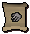 Sundering Strike |
Cub bloodrager |
1 |
0.1 | An attack that is 50% more accurate, deals more damage, and reduces opponent's Defence | 2 | 0.5 |
 Sundering Strike |
Little bloodrager |
11 |
0.1 | An attack that is 50% more accurate, deals more damage, and reduces opponent's Defence | 2 | 1 |
| 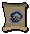 Sundering Strike |
Naïve bloodrager |
21 |
0.1 | An attack that is 50% more accurate, deals more damage, and reduces opponent's Defence | 2 | 1.5 |
 Sundering Strike |
Keen bloodrager |
31 |
0.1 | An attack that is 50% more accurate, deals more damage, and reduces opponent's Defence | 2 | 2 |
| 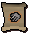 Sundering Strike |
Brave bloodrager |
41 |
0.1 | An attack that is 50% more accurate, deals more damage, and reduces opponent's Defence | 2 | 2.5 |
 Sundering Strike |
Brah bloodrager |
51 |
0.1 | An attack that is 50% more accurate, deals more damage, and reduces opponent's Defence | 2 | 3 |
 Sundering Strike |
Naabe bloodrager |
61 |
0.1 | An attack that is 50% more accurate, deals more damage, and reduces opponent's Defence | 2 | 3.5 |
 Sundering Strike |
Wise bloodrager |
71 |
0.1 | An attack that is 50% more accurate, deals more damage, and reduces opponent's Defence | 2 | 4 |
| 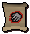 Sundering Strike |
Adept bloodrager |
81 |
0.1 | An attack that is 50% more accurate, deals more damage, and reduces opponent's Defence | 2 | 4.5 |
 Sundering Strike |
Sachem bloodrager |
91 |
0.1 | An attack that is 50% more accurate, deals more damage, and reduces opponent's Defence | 2 | 5 |
Summoning Deathslingers
Infusing deathslinger pouches:
| Pouch | Summoning Level Required | Components | Summoning Experience Gained | |||
 Cub deathslinger |
2 |
Gold charm |
 Tangle gum branches x2 |
5.7 | ||
 Little deathslinger |
12 |
Gold charm |
 Seeping elm branches x2 |
20.5 | ||
 Naïve deathslinger |
22 |
Gold charm |
 Blood spindle branches x2 |
44.4 | ||
 Keen deathslinger |
32 |
Green charm |
 Utuku branches x2 |
70.4 | ||
 Brave deathslinger |
42 |
Green charm |
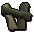 Spinebeam branches x2 |
102 | ||
 Brah deathslinger |
52 |
Green charm |
 Bovistrangler branches x2 |
160.5 | ||
 Naabe deathslinger |
62 |
Crimson charm |
 Thigat branches x2 |
224.6 | ||
| 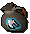 Wise deathslinger |
72 |
Crimson charm |
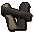 Corpsethorn branches x2 |
330.8 | ||
 Adept deathslinger |
82 |
Blue charm |
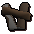 Entgallow branches x2 |
524.6 | ||
 Sachem deathslinger |
92 |
Blue charm |
 Grave creeper branches x2 |
818.5 | ||
Deathslinger familiars:
| Familiar | Summoning Level Required | Time (Minutes) | Experience for Summoning | Skill Focus | Other Abilities |
| Cub deathslinger | 2 |
15 | 0.6 | Combat - Ranged | Fights (Level 5) Poisonous Shot +1% Ranged defence boost |
| Little deathslinger | 12 |
15 | 1.1 | Combat - Ranged | Fights (Level 14) Poisonous Shot +2% Ranged defence boost |
| Naïve deathslinger | 22 |
15 | 1.6 | Combat - Ranged | Fights (Level 22) Poisonous Shot +3% Ranged defence boost |
| Keen deathslinger | 32 |
15 | 2.1 | Combat - Ranged | Fights (Level 32) Poisonous Shot +4% Ranged defence boost |
| Brave deathslinger | 42 |
15 | 2.6 | Combat - Ranged | Fights (Level 43) Poisonous Shot +5% Ranged defence boost |
| Brah deathslinger | 52 |
15 | 3.1 | Combat - Ranged | Fights (Level 54) Poisonous Shot +6% Ranged defence boost |
| Naabe deathslinger | 62 |
15 | 3.6 | Combat - Ranged | Fights (Level 65) Poisonous Shot +7% Ranged defence boost |
| Wise deathslinger | 72 |
15 | 4.1 | Combat - Ranged | Fights (Level 75) Poisonous Shot +8% Ranged defence boost |
| Adept deathslinger | 82 |
15 | 4.6 | Combat - Ranged | Fights (Level 86) Poisonous Shot +9% Ranged defence boost |
| Sachem deathslinger | 92 |
15 | 5.1 | Combat - Ranged | Fights (Level 96) Poisonous Shot +10% Ranged defence boost |
Deathslinger scrolls:
| Scroll | Pouch Required | Summoning Level Required | Summoning Experience for Transforming (per 10 scrolls) |
Special Move | Special Move Points | Summoning Experience Gained for Activating |
 Poisonous Shot |
Cub deathslinger |
2 |
0.1 | An attack that is 50% more accurate, deals more damage, and poisons the enemy | 2 | 0.5 |
 Poisonous Shot |
Little deathslinger |
12 |
0.1 | An attack that is 50% more accurate, deals more damage, and poisons the enemy | 2 | 1 |
| 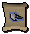 Poisonous Shot |
Naïve deathslinger |
22 |
0.1 | An attack that is 50% more accurate, deals more damage, and poisons the enemy | 2 | 1.5 |
| 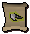 Poisonous Shot |
Keen deathslinger |
32 |
0.1 | An attack that is 50% more accurate, deals more damage, and poisons the enemy | 2 | 2 |
 Poisonous Shot |
Brave deathslinger |
42 |
0.1 | An attack that is 50% more accurate, deals more damage, and poisons the enemy | 2 | 2.5 |
 Poisonous Shot |
Brah deathslinger |
52 |
0.1 | An attack that is 50% more accurate, deals more damage, and poisons the enemy | 2 | 3 |
 Poisonous Shot |
Naabe deathslinger |
62 |
0.1 | An attack that is 50% more accurate, deals more damage, and poisons the enemy | 2 | 3.5 |
 Poisonous Shot |
Wise deathslinger |
72 |
0.1 | An attack that is 50% more accurate, deals more damage, and poisons the enemy | 2 | 4 |
 Poisonous Shot |
Adept deathslinger |
82 |
0.1 | An attack that is 50% more accurate, deals more damage, and poisons the enemy | 2 | 4.5 |
 Poisonous Shot |
Sachem deathslinger |
92 |
0.1 | An attack that is 50% more accurate, deals more damage, and poisons the enemy | 2 | 5 |
Infusing stormbringer pouches:
Summoning Stormbringers
| Pouch | Summoning Level Required | Components | Summoning Experience Gained | |||
 Cub stormbringer |
3 |
Gold charm |
 Salve nettles |
6.4 | ||
| 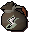 Little stormbringer |
13 |
Gold charm |
 Wildercress stems |
21.5 | ||
 Naïve stormbringer |
23 |
Gold charm |
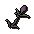 Blightleaf gauze |
45.8 | ||
 Keen stormbringer |
33 |
Green charm |
 Roseblood stems |
72.3 | ||
| 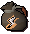 Brave stormbringer |
43 |
Green charm |
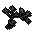 Bryll reeds |
104.5 | ||
 Brah stormbringer |
53 |
Green charm |
 Duskweed sproutings |
164 | ||
 Naabe stormbringer |
63 |
Crimson charm |
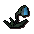 Soulbell roots |
229.2 | ||
 Wise stormbringer |
73 |
Crimson charm |
 Ectograss blades |
336.6 | ||
 Adept stormbringer |
83 |
Blue charm |
 Runeleaf fibres |
531.7 | ||
 Sachem stormbringer |
93 |
Blue charm |
 Spiritbloom fibres |
827 | ||
Stormbringer familiars:
| Familiar | Summoning Level Required | Time (Minutes) | Experience for Summoning | Skill Focus | Other Abilities |
| Cub stormbringer | 3 |
15 | 0.7 | Combat - Magic | Fights (Level 12) Snaring Wave +1% Magic defence boost |
| Little stormbringer | 13 |
15 | 1.2 | Combat - Magic | Fights (Level 18) Snaring Wave +2% Magic defence boost |
| Naïve stormbringer | 23 |
15 | 1.7 | Combat - Magic | Fights (Level 26) Snaring Wave +3 % Magic defence boost |
| Keen stormbringer | 33 |
15 | 2.2 | Combat - Magic | Fights (Level 37) Snaring Wave +4 % Magic defence boost |
| Brave stormbringer | 43 |
15 | 2.7 | Combat - Magic | Fights (Level 49) Snaring Wave +5 % Magic defence boost |
| Brah stormbringer | 53 |
15 | 3.2 | Combat - Magic | Fights (Level 61) Snaring Wave +6 % Magic defence boost |
| Naabe stormbringer | 63 |
15 | 3.7 | Combat - Magic | Fights (Level 73) Snaring Wave +7 % Magic defence boost |
| Wise stormbringer | 73 |
15 | 4.2 | Combat - Magic | Fights (Level 85) Snaring Wave +8 % Magic defence boost |
| Adept stormbringer | 83 |
15 | 4.7 | Combat - Magic | Fights (Level 97) Snaring Wave +9 % Magic defence boost |
| Sachem stormbringer | 93 |
15 | 5.2 | Combat - Magic | Fights (Level 109) Snaring Wave +10 % Magic defence boost |
Stormbringer scrolls:
| Scroll | Pouch Required | Summoning Level Required | Summoning Experience for Transforming (per 10 scrolls) |
Special Move | Special Move Points | Summoning Experience Gained for Activating |
 Snaring Wave |
Cub stormbringer |
3 |
0.1 | An attack that is 50% more accurate, deals more damage, and immobilises the opponent | 2 | 0.5 |
 Snaring Wave |
Little stormbringer |
13 |
0.1 | An attack that is 50% more accurate, deals more damage, and immobilises the opponent | 2 | 1 |
 Snaring Wave |
Naïve stormbringer |
23 |
0.1 | An attack that is 50% more accurate, deals more damage, and immobilises the opponent | 2 | 1.5 |
 Snaring Wave |
Keen stormbringer |
33 |
0.1 | An attack that is 50% more accurate, deals more damage, and immobilises the opponent | 2 | 2 |
| 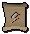 Snaring Wave |
Brave stormbringer |
43 |
0.1 | An attack that is 50% more accurate, deals more damage, and immobilises the opponent | 2 | 2.5 |
 Snaring Wave |
Brah stormbringer |
53 |
0.1 | An attack that is 50% more accurate, deals more damage, and immobilises the opponent | 2 | 3 |
 Snaring Wave |
Naabe stormbringer |
63 |
0.1 | An attack that is 50% more accurate, deals more damage, and immobilises the opponent | 2 | 3.5 |
| 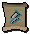 Snaring Wave |
Wise stormbringer |
73 |
0.1 | An attack that is 50% more accurate, deals more damage, and immobilises the opponent | 2 | 4 |
| 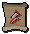 Snaring Wave |
Adept stormbringer |
83 |
0.1 | An attack that is 50% more accurate, deals more damage, and immobilises the opponent | 2 | 4.5 |
| 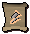 Snaring Wave |
Sachem stormbringer |
93 |
0.1 | An attack that is 50% more accurate, deals more damage, and immobilises the opponent | 2 | 5 |
Summoning Hoardstalkers
Infusing hoardstalker pouches:
| Pouch | Summoning Level Required | Components | Summoning Experience Gained | |||
 Cub hoardstalker |
5 |
Gold charm |
 Protomastyx hide |
7.1 | ||
 Little hoardstalker |
15 |
Gold charm |
 Submastyx hide |
22.5 | ||
| 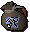 Naïve hoardstalker |
25 |
Gold charm |
 Paramastyx hide |
47.2 | ||
 Keen hoardstalker |
35 |
Green charm |
 Archaemastyx hide |
74.2 | ||
| 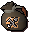 Brave hoardstalker |
45 |
Green charm |
 Dromomastyx hide |
107 | ||
 Brah hoardstalker |
55 |
Green charm |
 Spinomastyx hide |
167.5 | ||
| 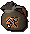 Naabe hoardstalker |
65 |
Crimson charm |
 Gallimastyx hide |
233.8 | ||
 Wise hoardstalker |
75 |
Crimson charm |
 Stegomastyx hide |
342.4 | ||
 Adept hoardstalker |
85 |
Blue charm |
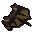 Megamastyx hide |
538.8 | ||
 Sachem hoardstalker |
95 |
Blue charm |
 Tyrannomastyx hide |
835.5 | ||
Hoardstalker familiars:
| Familiar | Summoning Level Required | Time (Minutes) | Experience for Summoning | Skill Focus | Other Abilities |
| Cub hoardstalker | 5 |
20 | 0.8 | Forager (tier 1 materials) | Aptitude |
| Little hoardstalker | 15 |
20 | 1.3 | Forager (tier 2 materials) | Aptitude |
| Naïve hoardstalker | 25 |
20 | 1.8 | Forager (tier 3 materials) | Aptitude |
| Keen hoardstalker | 35 |
20 | 2.3 | Forager (tier 4 materials) | Aptitude |
| Brave hoardstalker | 45 |
20 | 2.8 | Forager (tier 5 materials) | Aptitude |
| Brah hoardstalker | 55 |
20 | 3.3 | Forager (tier 6 materials) | Aptitude |
| Naabe hoardstalker | 65 |
20 | 3.8 | Forager (tier 7 materials) | Aptitude |
| Wise hoardstalker | 75 |
20 | 4.3 | Forager (tier 8 materials) | Aptitude |
| Adept hoardstalker | 85 |
20 | 4.8 | Forager (tier 9 materials) | Aptitude |
| Sachem hoardstalker | 95 |
20 | 5.3 | Forager (tier 10 materials) | Aptitude |
Hoardstalker scrolls:
| Scroll | Pouch Required | Summoning Level Required | Summoning Experience for Transforming (per 10 scrolls) |
Special Move | Special Move Points | Summoning Experience Gained for Activating |
 Aptitude |
Cub hoardstalker |
5 |
0.1 | An invisible skill boost of +1 | 3.1 | 0.5 |
 Aptitude |
Little hoardstalker |
15 |
0.1 | An invisible skill boost of +2 | 3.1 | 1 |
| 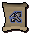 Aptitude |
Naïve hoardstalker |
25 |
0.1 | An invisible skill boost of +3 | 3.1 | 1.5 |
| 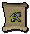 Aptitude |
Keen hoardstalker |
35 |
0.1 | An invisible skill boost of +4 | 3.1 | 2 |
 Aptitude |
Brave hoardstalker |
45 |
0.1 | An invisible skill boost of +5 | 3.1 | 2.5 |
 Aptitude |
Brah hoardstalker |
55 |
0.1 | An invisible skill boost of +6 | 3.1 | 3 |
 Aptitude |
Naabe hoardstalker |
65 |
0.1 | An invisible skill boost of +7 | 3.1 | 3.5 |
 Aptitude |
Wise hoardstalker |
75 |
0.1 | An invisible skill boost of +8 | 3.1 | 4 |
 Aptitude |
Adept hoardstalker |
85 |
0.1 | An invisible skill boost of +9 | 3.1 | 4.5 |
| 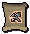 Aptitude |
Sachem hoardstalker |
95 |
0.1 | An invisible skill boost of +10 | 3.1 | 5 |
Summoning Worldbearers
Infusing worldbearer pouches:
| Pouch | Summoning Level Required | Components | Summoning Experience Gained | |||
| 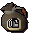 Cub worldbearer |
7 |
Gold charm |
 Protoleather torn bag |
7.8 | ||
 Little worldbearer |
17 |
Gold charm |
 Subleather torn bag |
23.5 | ||
 Naïve worldbearer |
27 |
Gold charm |
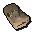 Paraleather torn bag |
48.6 | ||
 Keen worldbearer |
37 |
Green charm |
 Archleather torn bag |
76.1 | ||
 Brave worldbearer |
47 |
Green charm |
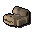 Dromoleather torn bag |
109.5 | ||
 Brah worldbearer |
57 |
Green charm |
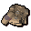 Spinoleather torn bag |
171 | ||
| 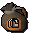 Naabe worldbearer |
67 |
Crimson charm |
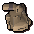 Gallileather torn bag |
238.4 | ||
| 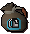 Wise worldbearer |
77 |
Crimson charm |
 Stegoleather torn bag |
348.2 | ||
 Adept worldbearer |
87 |
Blue charm |
 Megaleather torn bag |
545.9 | ||
 Sachem worldbearer |
97 |
Blue charm |
 Tyrannoleather torn bag |
844 | ||
Worldbearer familiars:
| Familiar | Summoning Level Required | Time (Minutes) | Experience for Summoning | Skill Focus | Other Abilities |
| Cub worldbearer | 7 |
20 | 0.9 | Beast of burden (12 slots) | Second Wind |
| Little worldbearer | 17 |
20 | 1.4 | Beast of burden (14 slots) | Second Wind |
| Naïve worldbearer | 27 |
20 | 1.9 | Beast of burden (16 slots) | Second Wind |
| Keen worldbearer | 37 |
20 | 2.4 | Beast of burden (18 slots) | Second Wind |
| Brave worldbearer | 47 |
20 | 2.9 | Beast of burden (20 slots) | Second Wind |
| Brah worldbearer | 57 |
20 | 3.4 | Beast of burden (22 slots) | Second Wind |
| Naabe worldbearer | 67 |
20 | 3.9 | Beast of burden (24 slots) | Second Wind |
| Wise worldbearer | 77 |
20 | 4.4 | Beast of burden (26 slots) | Second Wind |
| Adept worldbearer | 87 |
20 | 4.9 | Beast of burden (28 slots) | Second Wind |
| Sachem worldbearer | 97 |
20 | 5.4 | Beast of burden (30 slots) | Second Wind |
Worldbearer scrolls:
| Scroll | Pouch Required | Summoning Level Required | Summoning Experience for Transforming (per 10 scrolls) |
Special Move | Special Move Points | Summoning Experience Gained for Activating |
 Second Wind |
Cub worldbearer |
7 |
0.1 | Restores 20% of run energy | 1.5 | 0.5 |
 Second Wind |
Little worldbearer |
17 |
0.1 | Restores 22% of run energy | 1.5 | 1 |
 Second Wind |
Naïve worldbearer |
27 |
0.1 | Restores 24% of run energy | 1.5 | 1.5 |
 Second Wind |
Keen worldbearer |
37 |
0.1 | Restores 26% of run energy | 1.5 | 2 |
 Second Wind |
Brave worldbearer |
47 |
0.1 | Restores 28% of run energy | 1.5 | 2.5 |
 Second Wind |
Brah worldbearer |
57 |
0.1 | Restores 30% of run energy | 1.5 | 3 |
 Second Wind |
Naabe worldbearer |
67 |
0.1 | Restores 32% of run energy | 1.5 | 3.5 |
| 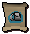 Second Wind |
Wise worldbearer |
77 |
0.1 | Restores 34% of run energy | 1.5 | 4 |
 Second Wind |
Adept worldbearer |
87 |
0.1 | Restores 36% of run energy | 1.5 | 4.5 |
| 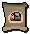 Second Wind |
Sachem worldbearer |
97 |
0.1 | Restores 40% of run energy | 1.5 | 5 |
Summoning Skinweavers
Infusing skinweaver pouches:
| Pouch | Summoning Level Required | Components | Summoning Experience Gained | |||
| 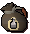 Cub skinweaver |
9 |
Gold charm |
 Cooked heim crabs x2 |
8.5 | ||
| 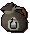 Little skinweaver |
19 |
Gold charm |
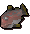 Cooked red-eye x2 |
24.5 | ||
 Naïve skinweaver |
29 |
Gold charm |
 Cooked dusk eel x2 |
50 | ||
 Keen skinweaver |
39 |
Green charm |
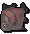 Cooked giant flatfish x2 |
78 | ||
 Brave skinweaver |
49 |
Green charm |
 Cooked short-finned eel x2 |
112 | ||
 Brah skinweaver |
59 |
Green charm |
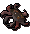 Cooked web snipper x2 |
174.5 | ||
 Naabe skinweaver |
69 |
Crimson charm |
 Cooked bouldabass x2 |
243 | ||
 Wise skinweaver |
79 |
Crimson charm |
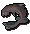 Cooked salve eel x2 |
354 | ||
| 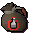 Adept skinweaver |
89 |
Blue charm |
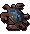 Cooked blue crab x2 |
553 | ||
| 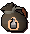 Sachem skinweaver |
99 |
Blue charm |
 Cooked cave moray x2 |
852.5 | ||
Skinweaver familiars:
| Familiar | Summoning Level Required | Time (Minutes) | Experience for Summoning | Skill Focus | Other Abilities |
| Cub skinweaver | 9 |
10 | 1 | Healer (food heals +10 life points) | Glimmer of Light |
| Little skinweaver | 19 |
10 | 1.5 | Healer (food heals +10 life points) | Glimmer of Light |
| Naïve skinweaver | 29 |
10 | 2 | Healer (food heals +10 life points) | Glimmer of Light |
| Keen skinweaver | 39 |
10 | 2.5 | Healer (food heals +10 life points) | Glimmer of Light |
| Brave skinweaver | 49 |
10 | 3 | Healer (food heals +20 life points) | Glimmer of Light |
| Brah skinweaver | 59 |
10 | 3.5 | Healer (food heals +20 life points) | Glimmer of Light |
| Naabe skinweaver | 69 |
10 | 4 | Healer (food heals +20 life points) | Glimmer of Light |
| Wise skinweaver | 79 |
10 | 4.5 | Healer (food heals +20 life points) | Glimmer of Light |
| Adept skinweaver | 89 |
10 | 5 | Healer (food heals +30 life points) | Glimmer of Light |
| Sachem skinweaver | 99 |
10 | 5.5 | Healer (food heals +30 life points) | Glimmer of Light |
Skinweaver scrolls:
| Scroll | Pouch Required | Summoning Level Required | Summoning Experience for Transforming (per 10 scrolls) |
Special Move | Special Move Points | Summoning Experience Gained for Activating |
 Glimmer of Light |
Cub skinweaver |
9 |
0.1 | Heals 10 life points | 1.3 | 0.5 |
| 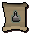 Glimmer of Light |
Little skinweaver |
19 |
0.1 | Heals 20 life points | 1.3 | 1 |
| 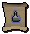 Glimmer of Light |
Naïve skinweaver |
29 |
0.1 | Heals 30 life points | 1.3 | 1.5 |
 Glimmer of Light |
Keen skinweaver |
39 |
0.1 | Heals 40 life points | 1.3 | 2 |
 Glimmer of Light |
Brave skinweaver |
49 |
0.1 | Heals 50 life points | 1.3 | 2.5 |
 Glimmer of Light |
Brah skinweaver |
59 |
0.1 | Heals 60 life points | 1.3 | 3 |
 Glimmer of Light |
Naabe skinweaver |
69 |
0.1 | Heals 70 life points | 1.3 | 3.5 |
| 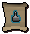 Glimmer of Light |
Wise skinweaver |
79 |
0.1 | Heals 80 life points | 1.3 | 4 |
Glimmer of Light |
Adept skinweaver |
89 |
0.1 | Heals 90 life points | 1.3 | 4.5 |
 Glimmer of Light |
Sachem skinweaver |
99 |
0.1 | Heals 100 life points | 1.3 | 5 |

More articles in
Dungeoneering
|
|
|
Further Help
If this article does not help you, you may find the following sections of the RuneScape site helpful:
|
|